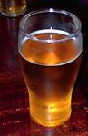

Dans les touos vièrs temps, les Nouormands b'vaient du baûchet - tch'est eune bouaisson faite auve du myi. Nou peut aîsiment s'înmaginner des Vikings à en baithe des gorgies dé d'dans d's ênormes cônes.
Mais la tchultivâtion d'pommes à cidre arrivit en Nouormandie d'la Catalongne avant l'quatorzième siècl'ye et la faîs'sie d'bouôn cidre étout. Et ch'est bein seu qu'nou-s'a bu l'cidre ichîn en Jèrri d'pis chu temps-là.
Jusqu'à la fîn du dgiêx-huitième siècl'ye, la faîs'sie d'cidre 'tait la pus grande îndustrie d'l'Île et la tchultivâtion des pommes formait la campangne, nos clios, nos banques et nos fôssés.
Dans la grand' tèrre étout l'cidre dévînt eune hardi grande îndustrie, et jusqu'à la Deuxième Dgèrre Mondiale lé cidre 'tait la deuxième bouaisson en France - lé vîn étant la preunmiéthe. Mais la biéthe est dév'nue pus populaithe avaû l's années et la production d'cidre a tchée, mais la Nouormandie est acouo connue pouor ses gardîns ès pommièrs et produit pus d'cidre qu'la Brétangne.
Mais ch'n'est pon tout l'cidre tch'est fait en Nouormandie tch'est bu tout sîmpliément coumme chenna, pa'ce qu'eune partie est transformée en calvados dans les distil'lies.
L'ieau-d'vie dé cidre est faite sèrvi étout pouor la production dé pommeau. Tch'est qu'est l'pommeau? Ch'est eune bouaisson fortifiée coumme du vîn d'Porto ou du madère qu'nou bait coumme apéritif.

Pouor faithe lé pommeau, nou mêle du janne calvados auve du pur jus d'cidre. L'alcool dans l'calvados cope la fèrmentâtion du cidre, et pis l'mêlange dait vieilli dans des bârriques en tchêne duthant dgiêx-huit mais. La production annuelle du pommeau est dans les sept chent mille boutelles - mais seul'ment chîn par chent d'la production tchitte la Nouormandie. I' sembl'ye qué ch'est un apéritif Nouormand tchi n'est dgéthe exporté! Par compathaîson, dans les quarante par chent dé calvados vont à l'export.
Y'a acouo eune bouaisson tch'est dév'nue populaithe dans la grand' tèrre à ches drein et ch'est l'kir Nouormand. Ou connaîssez sans doute lé kir - eune vèrrée d'blianc vîn auve du litcheu d'cassis dans. Mais y'a étout eune vèrsion Nouormande qu'nou peut c'mander dans les aubèrges et les restaurants.
Y'a deux avis sus l'kir Nouormand: y'en a tchi dithent qué ch'est eune m'suthe dé cassis auve du cidre, et d'aut's tchi dithent qué ch'est pustôt eune m'suthe dé cassis et eune m'suthe dé calvados auve du cidre.
Viyant toute la tradition, j'éthons-t-i' la pôssibilité d'ravigoter la faîs'sie d'cidre siez nous? I' faut l'espéther. Bévons à chenna!
Viyiz étout: